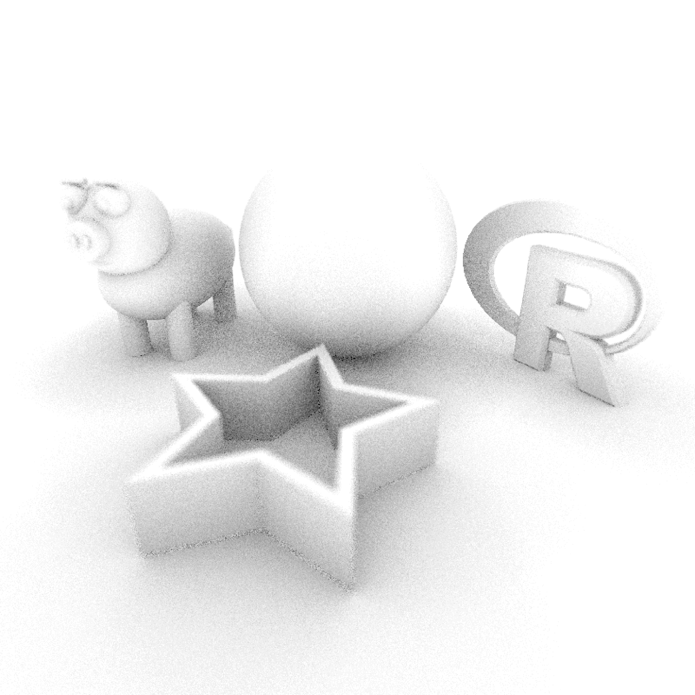
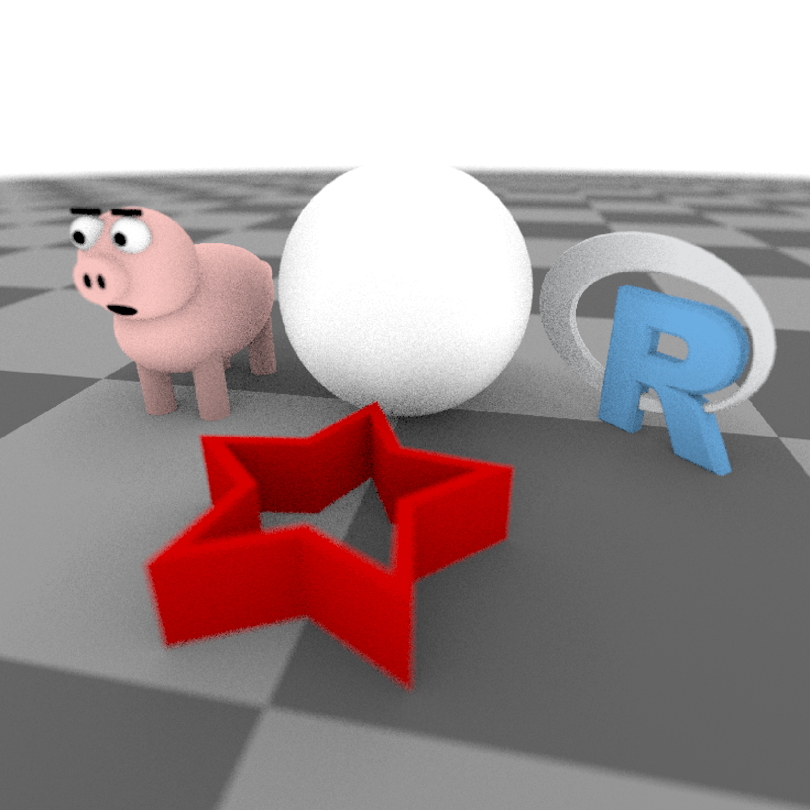

Takes the scene description and renders an image using ambient occlusion, either to the device or to a filename.
render_ao(
scene,
width = 400,
height = 400,
fov = 20,
sample_dist = 10,
keep_colors = FALSE,
samples = 100,
camera_description_file = NA,
camera_scale = 1,
iso = 100,
film_size = 22,
min_variance = 0,
min_adaptive_size = 8,
sample_method = "sobol",
background_color = "white",
lookfrom = c(0, 1, 10),
lookat = c(0, 0, 0),
camera_up = c(0, 1, 0),
aperture = 0.1,
clamp_value = Inf,
filename = NULL,
shutteropen = 0,
shutterclose = 1,
focal_distance = NULL,
ortho_dimensions = c(1, 1),
parallel = TRUE,
bvh_type = "sah",
progress = interactive(),
verbose = FALSE
)Tibble of object locations and properties.
Default `400`. Width of the render, in pixels.
Default `400`. Height of the render, in pixels.
Default `20`. Field of view, in degrees. If this is `0`, the camera will use an orthographic projection. The size of the plane used to create the orthographic projection is given in argument `ortho_dimensions`. From `0` to `180`, this uses a perspective projections. If this value is `360`, a 360 degree environment image will be rendered.
Default `10`. Ambient occlusion sampling distance.
Default `FALSE`. Whether to keep the diffuse material colors.
Default `100`. The maximum number of samples for each pixel. If this is a length-2 vector and the `sample_method` is `stratified`, this will control the number of strata in each dimension. The total number of samples in this case will be the product of the two numbers.
Default `NA`. Filename of a camera description file for rendering with a realistic camera. Several camera files are built-in: `"50mm"`,`"wide"`,`"fisheye"`, and `"telephoto"`.
Default `1`. Amount to scale the camera up or down in size. Use this rather than scaling a scene.
Default `100`. Camera exposure.
Default `22`, in `mm` (scene units in `m`. Size of the film if using a realistic camera, otherwise ignored.
Default `0.00005`. Minimum acceptable variance for a block of pixels for the adaptive sampler. Smaller numbers give higher quality images, at the expense of longer rendering times. If this is set to zero, the adaptive sampler will be turned off and the renderer will use the maximum number of samples everywhere.
Default `8`. Width of the minimum block size in the adaptive sampler.
Default `sobol`. The type of sampling method used to generate random numbers. The other options are `random` (worst quality but fastest), `stratified` (only implemented for completion), `sobol_blue` (best option for sample counts below 256), and `sobol` (slowest but best quality, better than `sobol_blue` for sample counts greater than 256).
Default `"white"`. Background color.
Default `c(0,1,10)`. Location of the camera.
Default `c(0,0,0)`. Location where the camera is pointed.
Default `c(0,1,0)`. Vector indicating the "up" position of the camera.
Default `0.1`. Aperture of the camera. Smaller numbers will increase depth of field, causing less blurring in areas not in focus.
Default `Inf`. If a bright light or a reflective material is in the scene, occasionally there will be bright spots that will not go away even with a large number of samples. These can be removed (at the cost of slightly darkening the image) by setting this to a small number greater than 1.
Default `NULL`. If present, the renderer will write to the filename instead of the current device.
Default `0`. Time at which the shutter is open. Only affects moving objects.
Default `1`. Time at which the shutter is open. Only affects moving objects.
Default `NULL`, automatically set to the `lookfrom-lookat` distance unless otherwise specified.
Default `c(1,1)`. Width and height of the orthographic camera. Will only be used if `fov = 0`.
Default `FALSE`. If `TRUE`, it will use all available cores to render the image (or the number specified in `options("cores")` if that option is not `NULL`).
Default `"sah"`, "surface area heuristic". Method of building the bounding volume hierarchy structure used when rendering. Other option is "equal", which splits tree into groups of equal size.
Default `TRUE` if interactive session, `FALSE` otherwise.
Default `FALSE`. Prints information and timing information about scene construction and raytracing progress.
Raytraced plot to current device, or an image saved to a file. Invisibly returns the array (containing either debug data or the RGB)
#Generate and render a regular scene and an ambient occlusion version of that scene
if(rayrender:::run_documentation()) {
angles = seq(0,360,by=36)
xx = rev(c(rep(c(1,0.5),5),1) * sinpi(angles/180))
yy = rev(c(rep(c(1,0.5),5),1) * cospi(angles/180))
star_polygon = data.frame(x=xx,y=yy)
hollow_star = rbind(star_polygon,0.8*star_polygon)
generate_ground(material = diffuse(color="grey20", checkercolor = "grey50",sigma=90)) %>%
add_object(sphere(material=metal())) %>%
add_object(obj_model(y=-1,x=-1.8,r_obj(), angle=c(0,135,0),material = diffuse(sigma=90))) %>%
add_object(pig(x=1.8,y=-1.2,scale=0.5,angle=c(0,90,0),diffuse_sigma = 90)) %>%
add_object(extruded_polygon(hollow_star,top=-0.5,bottom=-1, z=-2,
hole = nrow(star_polygon),
material=diffuse(color="red",sigma=90))) %>%
render_scene(parallel = TRUE,width=800,height=800,
fov=70,clamp_value=10,samples=128, aperture=0.1,
lookfrom=c(-0.9,1.2,-4.5),lookat=c(0,-1,0))
}
if(rayrender:::run_documentation()) {
#Render the scene with ambient occlusion
generate_ground(material = diffuse(color="grey20", checkercolor = "grey50",sigma=90)) %>%
add_object(sphere(material=metal())) %>%
add_object(obj_model(y=-1,x=-1.8,r_obj(), angle=c(0,135,0),material = diffuse(sigma=90))) %>%
add_object(pig(x=1.8,y=-1.2,scale=0.5,angle=c(0,90,0),diffuse_sigma = 90)) %>%
add_object(extruded_polygon(hollow_star,top=-0.5,bottom=-1, z=-2,
hole = nrow(star_polygon),
material=diffuse(color="red",sigma=90))) %>%
render_ao(parallel = TRUE,width=800,height=800, sample_dist=10,
fov=70,samples=128, aperture=0.1,
lookfrom=c(-0.9,1.2,-4.5),lookat=c(0,-1,0))
}
if(rayrender:::run_documentation()) {
#Decrease the ray occlusion search distance
generate_ground(material = diffuse(color="grey20", checkercolor = "grey50",sigma=90)) %>%
add_object(sphere(material=metal())) %>%
add_object(obj_model(y=-1,x=-1.8,r_obj(), angle=c(0,135,0),material = diffuse(sigma=90))) %>%
add_object(pig(x=1.8,y=-1.2,scale=0.5,angle=c(0,90,0),diffuse_sigma = 90)) %>%
add_object(extruded_polygon(hollow_star,top=-0.5,bottom=-1, z=-2,
hole = nrow(star_polygon),
material=diffuse(color="red",sigma=90))) %>%
render_ao(parallel = TRUE,width=800,height=800, sample_dist=1,
fov=70,samples=128, aperture=0.1,
lookfrom=c(-0.9,1.2,-4.5),lookat=c(0,-1,0))
}

if(rayrender:::run_documentation()) {
#Turn on colors
generate_ground(material = diffuse(color="grey20", checkercolor = "grey50",sigma=90)) %>%
add_object(sphere(material=metal())) %>%
add_object(obj_model(y=-1,x=-1.8,r_obj(), angle=c(0,135,0),material = diffuse(sigma=90))) %>%
add_object(pig(x=1.8,y=-1.2,scale=0.5,angle=c(0,90,0),diffuse_sigma = 90)) %>%
add_object(extruded_polygon(hollow_star,top=-0.5,bottom=-1, z=-2,
hole = nrow(star_polygon),
material=diffuse(color="red",sigma=90))) %>%
render_ao(parallel = TRUE,width=800,height=800, sample_dist=1,
fov=70,samples=128, aperture=0.1, keep_colors = TRUE,
lookfrom=c(-0.9,1.2,-4.5),lookat=c(0,-1,0))
}
